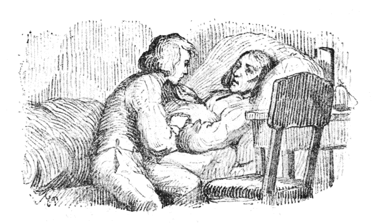
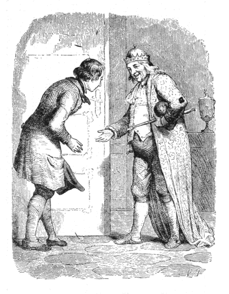

かわいそうなヨハンネスは、おとうさんがひどくわずらって、きょうあすも知れないほどでしたから、もうかなしみのなかにしずみきっていました。せまいへやのなかには、ふたりのほかに人もいません。テーブルの上のランプは、いまにも消えそうにまばたきしていて、よるももうだいぶふけていました。
「ヨハンネスや、おまえはいいむすこだった。」と、病人のおとうさんはいいました。「だから、世の中へでても、神さまがきっと、なにかをよくしてくださるよ。」
そういって、やさしい目でじっとみながら、ふかいため息をひとつつくと、それなり息をひきとりました。それはまるでねむっているようでした。でも、ヨハンネスは泣かずにいられません、この子はもう、この世の中に、父親もなければ、母親もないし、男のきょうだいも、女のきょうだいもないのです。かわいそうなヨハンネス。ヨハンネスは、寝台のまえにひざをついて、死んだおとうさんの手にほおずりして、しょっぱい涙をとめどなくながしていました。そのうち、いつか目がくっついて、寝台のかたい脚にあたまをおしつけたなり、ぐっすり寝こんでしまいました。
寝ているうちに、ヨハンネスは、ふしぎな夢をみました。お日さまとお月さまとがおりて来て＊礼拝をするところをみました。それから、なくなったおとうさんが、またげんきで、たっしゃで、いつもほんとうにうれしいときするようなわらい声をきかせました。ながい、うつくしい髪の毛の上に、金のかんむりをかぶったうつくしいむすめが、ヨハンネスに手をさしのべました。するとおとうさんが「ごらん、なんといいおよめさんをおまえはもらったのだろう。これこそ世界じゅうふたりとないうつくしいひとだ。」といいました。おや、とおもうとたん、ヨハンネスは目がさめました。うつくしい夢はかげもかたちもなくて、おとうさんは死んで、つめたくなって、寝台にねていました。たれひとりそこにはいません。なんてかわいそうなヨハンネス。
＊ヨセフまたひとつ夢をみてこれをその兄弟に述べていいけるは我また夢をみたるに日と月と十一の星われを拝せりと。（創世記三七ノ九）
次の週に、死人はお墓の下にうまりました。ヨハンネスはぴったりヨハンネスは、こうはっきりとじぶんにむかっていってみて、ついほほえましくなりました。そのそばから、涙はまたほほをつたわってながれました。あたまの上で小鳥たちが、とちの木の
けれども、さしあたりまず、大きな木の十字
さて、あくる日朝はやく、ヨハンネスは、わずかなものを包にまとめ、のこった財産の五十ターレルと二、三枚のシリング銀貨とを、しっかり腰につけました。これだけであてもなしに世の中へ出て行こうというのです。いよいよ出かけるまえ、まず墓地へいって、おとうさんのお墓におまいりして、
「おとうさん、さよなら。ぼくは、いつまでもいい人間でいたいとおもいます。ですから、神さまが、幸福にしてくださるように、たのんでください。」
ヨハンネスがこれからでていこうという野には、のこらずの花があたたかなお日さまの光をあびて、いきいきと、美しい色に咲いていました。そうして、風のふくままに、それが、がってんがってんしていました。「みどりの国へよくいらっしゃいましたね、ここはずいぶんきれいでしょう。」といっているようでした。けれど、ヨハンネスは、もういちどふりかえって、ふるいお寺におなごりをおしみました。このお寺で、ヨハンネスはこどものとき洗礼をうけました。日曜日にはきまって、おとうさんにつれられていって、おつとめをしたり、さんび歌をうたったりしました。そのとき、ふと、たかい塔の窓の所に、お寺の＊
＊家魔 。善魔で矮魔 の一種。ニース（Nis）。人間の家のなかに住み、こどもの姿で顔は老人。ねずみ色の服に赤い先の尖った帽子をかぶる。お寺にはこの仲間が必ずひとりずついて塔の上に住み、鐘をたたいたりするという。
＊＊じぶんの手にせっぷんしてみせて、はなれている相手にむかってその手をなげる形。
ヨハンネスは、これから、大きなにぎやかな世間へでたら、どんなにたくさん、おもしろいことがみられるだろうとおもいました。それで、足にまかせて、どこまでも、これまでついぞ来たこともない遠くまで、ずんずんあるいて行きました。通っていく所の名も知りません。出あうひとの顔も知りません。まったくよその土地に来てしまっていました。＊＊じぶんの手にせっぷんしてみせて、はなれている相手にむかってその手をなげる形。
はじめての晩は、野ッ原の、枯草を積んだ上にねなければなりませんでした。ほかに寝床といってはなかったのです。でも、それがとても寝ごこちがよくて、王さまだってこれほどけっこうな寝床にはお休みにはなるまいとおもいました。ひろい野中に小川がちょろちょろながれていて、枯草の山があって、あたまの上には青空がひろがっていて、なるほどりっぱな寝べやにちがいありません。赤い花、白い花があいだに
「おはよう。おはよう。まだ起きないの。」
お寺では、かんかん、鐘がなっていました。ちょうど日曜日でした。近所のひとたちが、お説教をききに、ぞろぞろでかけていきます。ヨハンネスも、そのあとからついていって、さんび歌のなかまにまじって、神さまのお言葉をききました。するうち、こどものとき、洗礼をうけたり、おとうさんにつれられて、さんび歌をいっしょにうたった、おなじみぶかいお寺に来ているようにおもいました。
お寺のそとの墓地には、たくさんお墓がならんでいて、なかには高い草のなかにうずまっているものもありました。それをみると、ヨハンネスは、おとうさんのお墓も草むしりして、お花をあげるものがなければ、やがてこんなふうになるのだとおもいました。そこで、べったりすわって、草をぬいてやったり、よろけている十字
「たぶん、おとうさんのお墓にも、たれかが、おなじことをしておいてくれるでしょう、ぼくにできないかわりに。」
墓地の門そとに、ひとり、年よりのこじきがいて、よぼよぼ、松葉づえにすがっていました。ヨハンネスは、もっていたシリング銀貨をやってしまいました。それですっかりたのしくなり、げんきになって、またひろい世の中へでていきました。［＃「。」は底本では欠落］
夕方、たいへんいやなお天気になりました。どこか宿をさがそうとおもっていそぐうち、夜になりました。でもどうやら、小山の上にぽっつり立っているちいさなお寺にたどりつきました。しあわせと、おもての戸があいていたので、そっとそこからはいりました。そうして、あらしのやむまでそこにいることにしました。
「どこかすみっこにかけさせてもらおう。」と、ヨハンネスはいって、なかにはいっていきました。
「なにしろひどくくたびれている、すこし休まずにはいられない。」
こういって、ヨハンネスはそこにどたんとすわって、両手をくみあわせて、晩のお祈をいいました。こうして、いつか知らないまに寝込んで、夢をみていました。そのあいだに、そとでは、かみなりがなったり、いなづまが走ったりしていました。
やっと目がさめてみると、もう
「なんだって、そんなことをするのです。」と、ヨハンネスは声をかけました。「ひどい、わるいことです。エスさまのお名にかけて、どうぞそっとしてあげておいてください。」
「くそ、よけいなことをいうない。」と、そのふたりの男はこわい顔をしました。「こいつはおれたちをいっぱいはめたんだ。おれたちから
「ぼく、五十ターレル、お金があります。」と、ヨハンネスはいいました、「これがもらったありったけの財産ですが、そっくりあなた方に上げましょう。そのかわり、けっしてそのかわいそうな死人のひとをいじめないと、はっきり約束してください。なあに、お金なんかなくってもかまわない。ぼくは手足はたっしゃでつよい、それにしじゅう神さまが守っていてくださるとおもうから。」
「そうか。」と、そのにくらしい男どもはいいました。「きさま、ほんとうにその
こういって、ふたりは、ヨハンネスのだしたお金をうけとって、この子のお人よしなのを大わらいにわらったのち、どこかへ出て行きました。でも、ヨハンネスは死人を、またちゃんと
森のなかをあるきながらみまわすと、月あかりが木立をすけてちらちらしているなかに、かわいらしい
さて、ヨハンネスがいよいよ森を出ぬけようとしたとき、しっかりした男の声で、うしろからよびとめるものがありました。
「もしもし、ご
「あてもなくひろい世間へ。」と、ヨハンネスはいいました。「父親もなし、母親もなし、たよりのないわかものです。でも神さまは、きっと守ってくださるでしょう。」
「わたしも、あてもなく世間へでていくところだ。」と、その知らないひとはいいました。「ひとつ、ふたりでなかまになりましょうか。」
「ええ、そうしましょう。」と、ヨハンネスもいいました。そこで、ふたりは、いっしょに出かけました。じき、ふたりは仲よしになりました。なぜといって、ふたりともいい人たちだったからです。ただ、ヨハンネスは、この知らない道づれが、じぶんよりもはるかはるかかしこい人だということに、気がつきました。この人は世界じゅうたいていあるいていて、なんだって話せないことはないくらいでした。
お日さまが、もうすいぶんたかくのぼったので、ふたりは大きな木の下に腰をおろして、朝の食事にかかかりました。そこへ、ひとりのおばあさんがあるいて来ました。いやはや、ずいぶんなおばあさん［＃「おばあさん」は底本では「おばさん」］、まるではうように腰をまげてあるいて、やっとしゅもくづえにすがっていました。それでも、森でひろいあつめたたきぎをひとたば、せなかにのせていました。前掛が胸でからげてあって、ヨハンネスがふとみると＊しだの木のじくにやなぎの枝をはめた大きいむちが三本、そこからとびだしていました。で、ふたりのいるまえをよろよろするうち、片足すべらしてころぶとたん、きゃあとたかい声をたてました。きのどくに、このおばあさん、足をくじいたのですね。
＊しだの木は魔法の木。しだの木のむちに、やなぎの枝の柄をはめる。
ヨハンネスはそのとき、ふたりでおばあさんをかかえて、「とんだ高い
それで、なかなか、このむちを手ばなしたがらないようすでしたが、くじいた足のままそこにたおれていることも、ずいぶんらくではないので、とうとう、むちをゆずることになりました。そのかわり、ほんのちょっぴりくすりをなすったばかりで、このおばあさん、すぐぴんと足が立って、まえよりもたっしゃに、しゃんしゃんあるいていきました。これはまさしく、このこうやくのききめでした。でも、それだけに、薬屋などでめったに手にはいるものではありません。
「そんなむちみたいなもの、なんにするんです。」と、ヨハンネスは、そこで旅なかまにたずねました。
「どうして、三本ともけっこうな草ぼうきさ。」と、相手はいいました。「こんなものをほしがるのは、わたしもとんだかわりものさね。」
さて、それからまた、しばらくの道のりを行きました。
「やあ、いけない、空がくもって来ますよ。」と、ヨハンネスはいいました。「ほら、むくむく、きみのわるい雲がでて来ましたよ。」
「いんや。」と、旅なかまはいいました。「あれは雲ではない。山さ。どうしてりっぱな大山さ。のぼると雲よりもたかくなって、澄んだ空気のなかに立つことになる。そこへいくと、どんなにすばらしいか。あしたは、もうずいぶんとおい世界に行っていることになるよ。」
でも、そこまでは、こちらでながめたほど近くはありませんでした。まる一日たっぷりあるいて、やっと山のふもとにつきました。見あげると、まっくろな森が空にむかってつっ立っていて、町ほどもありそうな大きな岩がならんでいました。それへのぼろうというのは、どうしてひととおりやふたとおり骨の折れるしごとではなさそうです。そこで、ヨハンネスと旅なかまは、ひと晩、ふもとの宿屋にとまって、ゆっくり休んで、あしたの山のぼりのげんきをやしなうことにしました。
さて、その宿屋の下のへやの、大きな
そのうち、芝居がはじまりましたが、それは王さまと女王さまの出てくる、なかなかおもしろい喜劇でした。ふたりの陛下は、びろうどの玉座に腰をかけて、どうしてなかなかの
かわいそうに、人形つかいの男はすっかりしょげて、女王さまの人形をかかえて、おろおろしていました。それは一座のなかでも、いちばんきりょうよしの人形でしたのに、にくにくしいブルドッグのために、あたまをかみきられてしまったのですからね。けれども、みんな見物が散ってしまったあと、ヨハンネスといっしょにみに来ていた旅なかまが、こんども、そのきずをなおしてやろうといいだしました。そこで、れいの小箱をあけて、おばあさんのくじいた足を立たせてやったあのこうやくを、人形にぬってやりました。人形は、こうやくをぬってもらうと、さっそくきずがきれいになおって、おまけに、じぶんで手足までたっしやにうごかせるようになりました。もう糸であやつることもいらなくなりました。人形はまるで、生きた人のようでした。ただ口がきけないだけです。人形芝居の親方は、どんなによろこんだでしょう。人形つかいがつかわないでも、この人形は勝手にじぶんでおどれるのです。これは、ほかの人形にまねのならないことでした。
つぎの朝、ヨハンネスは旅なかまとつれ立って、みんなからわかれて行きました。高い山にかかって、大きなもみの林を通っていきました。山道をずんずんのぼるうちに、いつかお寺の塔が、ずっと目のしたになって、おしまいにはそれが、いちめんみどりのなかにぽっつりとただひとつ、赤いいちごの実をおいたようにみえました。もうなん里もなん里もさきの、ついいったことの［＃「ことの」は底本では「ことのの」］ない遠方までがみはらせました。――このすばらしい世界に、こんなにもいろいろとうつくしいものを、いちどに見るなんということを、ヨハンネスは、これまでに知りませんでした。お日さまは、さわやかに晴れた青空の上からあたたかく照りかがやいて、峰と峰とのあいだから、りょうしの吹く
「おお、ありがたい神さま、こんないいことをわたしたちにしてくださって、この世界にあるかぎりのすばらしいものを、惜しまずみせてくださいますあなたに、まごころのせっぷんをささげさせてください。」
旅なかまも、やはり、手を組んだまま、そこに立って、あたたかなお日さまの光をあびているふもとの森や町をながめました。ちょうどそのときふと、あたまの上で、なんともめずらしく、かわいらしい声がしました。ふたりがあおむいてみると、大きいまっ白なはくちょうが一羽、空の上に舞っていました。そのうたう声はいかにもうつくしくて、ほかの鳥のうたうのとまるでちがっていました。でも、その歌が、だんだんによわって来たとき、鳥はがっくりうなだれました。そうして、それは、ごくものしずかに、ふたりの足もとに落ちて来ました。このうつくしい鳥は死んで、そこに横たわっているのです。
「こりゃあ、そろってみごとなつばさだ。」と、旅なかまはいいました。「どうだ、このまっ白で大きいこと、この鳥のつばさぐらいになると、ずいぶんの
こういって、旅なかまは、ただひとうち、死んだはくちょうのつばさを切りおとして、それをじぶんのものにしました。
さて、ふたりは山を越えて、またむこうへなん里もなん里も旅をつづけていくうちに、とうとう、大きな町のみえる所に来ました。その町にはなん百とない塔がならんで、お日さまの光のなかで、銀のようにきらきらしていました。町のまんなかには、りっぱな大理石のお城があって、赤い金で屋根が
ヨハンネスと旅なかまとは、すぐ町にはいろうとはしないで、町の入口で宿をとりました。ここで旅のあかをおとしておいて、さっぱりしたようすになって、町の往来をあるこうというのです。宿屋のていしゅの話では、王さまという人は、心のやさしい、それはいいひとで、ついぞ人民に
「いやな王女だなあ。」と、ヨハンネスはいいました。「そんなのこそ、ほんとうにむちでもくらわしたら、ちっとはよくなるかもしれない。わたしがそのお年よりの王さまだったら、とうにひどくこらしめてやるところなのに。」
そのとき、そとで、町の人たちが、万歳万歳とさけぶ声がしました。ちようど王女のお通りなのです。なるほど、王女はじつに目のさめるようなうつくしさで、このお姫さまがわるい人間だということをわすれさせるほどでしたから、ついたれも万歳をさけばずにはいられなかったのです。十二人のきれいな少女がおそろいの白絹の服で、手に手に金のチューリップをささげてもち、まっ黒な馬にのって、両わきにしたがいました。王女ご自身は、雪とみまがうような
ヨハンネスは、王女をみたせつな、顔いちめんかっと赤くほてって、ただひとしずくの血のしたたりのようになりました。もうひと言もものがいえなくなりました。まあ、この王女は、おとうさんのなくなった晩、ヨハンネスが夢でみた、あの金のかんむりのうつくしいむすめにそっくりなのです。あんまりうつくしいので、いやおうなしに、いきなり大好きにさせられてしまいました。この人が、じぶんのかけたなぞが、そのとおりにとけないといって、ひとの首をしめたり、きらせたりするわるい魔法つかいの女だなんて、そんなはずがあるものか。「たれでも、それは、この上ないみじめなこじきでも、お姫さまに結婚を申し込むことはかまわないということだ。よし、ぼくもお城へでかけよう。
「どうしたっていかずにはいられないもの。」
ところでみんなは、口をそろえて、そんなまねはしないがいい、ほかのものと同様、うきめをみるにきまっているといいました。
旅なかまも、やはり、おもいとまるようにいいきかせました。でも、ヨハンネスは、大じょうぶ、うまくやってみせますといって、くつと上着のちりをはらって、顔と手足をあらって、みごとな
「おはいり。」ヨハンネスが戸をたたくと、なかで、お年よりの王さまがおこたえになりました。――ヨハンネスがあけてはいると、ゆったりした朝着のすがたに、縫いとりした上ぐつをはいた王さまが、出ておいでになりました。王冠をあたまにのせて、王しゃくを片手にもって、王さまのしるしの地球儀の

「ちょっとお待ちよ。」と、王さまはいって、ヨハンネスに手をおだしになるために、珠を小わきにおかかえになりました。ところが、結婚申込に来た客だとわかると、王さまはさっそく泣きだして、しゃくも珠も、ゆかの上にころがしたなり、朝着のそでで、涙をおふきになるしまつでした。おきのどくな老王さま。
「それは、およし。」と、王さまはおっしゃいました。「「ほかの［＃「ほかの」は底本では「ほのか」］もの同様、いいことはないよ。では、おまえにみせるものがある。」
そこで、王さまは、ヨハンネスを、王女の
「ほらね、このとおりだ。」お年よりの王さまは、おっしゃいました。「いずれおまえも、ここにならんでいる人たちとそっくりおなじ身の上になるのだから、これだけはどうかやめておくれ。わたしになさけないおもいをさせないでおくれ。わしは心ぐるしくてならないのだからな。」
ヨハンネスは、この心のいいお年よりの王さまのお手にせっぷんしました。そうして、わたくしはうつくしいお姫さまを心のそこからしたっています。きっと、うまくいくつもりですといいました。
そういっているとき、当のお姫さまが、
さて、ヨハンネスは、そのあくる日、またあらためてお城へくることになりました。そこに
ヨハンネスは、いったいどうなるかなんのという心配はしません。ただもううきうきと、うつくしいお姫さまのことばかりかんがえていました。そうしておめぐみぶかい神さまが、きっとたすけてくださるとかたく信じていました。ではどういうふうにといっても、それはわかりません。そんなことはかんがえないほうがいいとおもっていました。そこで、宿へかえる道道も、往来をおどりおどりくると、旅なかまが待ちかまえていました。
ヨハンネスは、王女がやさしくもてなしてくれたこと、いかにもうつくしいひとだということ、それからそれととめどなく話しました。あしたはいよいよお城へでかけて、みごとになぞをいいあてて、運だめしをするのだといって、もうそればかり待ちこがれていました。
けれども、旅なかまは、かぶりをふって、うかない顔をしていました。
「わたしは、とてもきみを好いているのだ。」と、旅なかまはいいました。「だから、おたがいこれからもながくいっしょにいたいとおもうのに、これなりおわかれにならなくてはならない。ヨハンネス、きみはきのどくなひとだよ。わたしは泣きたくてならないが、こうしているのも今夜かぎりだろうから、せっかくのきみのたのしみをさまたげるでもない。愉快にしていようよ。大いに愉快にね。泣くことなら、あす、きみのでていったあとで、
お姫さまのところへ、あたらしい結婚の申し込み手がやって来たことを、もうさっそく町じゅうの人たちが知っていました。それで、たれも大きなかなしみにおそわれました。芝居は木戸をしめたままです。お菓子屋さんたちは申しあわせたように、小ぶたのお砂糖人形を黒い、
その夕方、旅なかまは、大きなはちにいっぱい、くだもののお酒のポンスをこしらえて来て、それでは大いに愉快にやって、ひとつ王女殿下の健康をいわって
町はひっそりしていました。ちょうど時計は十二時十五分まえをうったところです。ふと窓があいたとおもうと、王女はながい白マントの上に、まっ黒なつばさをつけて、ひらりと舞い上がりました。町の空をつっきって、むこうの大きな山のほうへとんでいきました。ところで、旅なかまは、王女に気づかれないように、からだをみえなくしておいて、そのあとを追いながら、王女をむちでうちました。うたれるそばから、ひどく血がでました。ほほう、たいへんな空の旅があったものですね。風が王女のマントを、それこそ大きな舟の帆のように、いっぱいにふくらませて行く上から、ほんのりとお月さまの光がすけてみえました。
「おお、ひどいあられだ、ひどいあられだ。」
王女は、むちのあたるたんびにこういいました。なに、ぶたれるのはあたりまえです。それでもやっと山まで来て、とんとん戸をたたきましたとたんに、ごろごろひどいかみなりの音がして、山はぱっくり口をあきました。王女はなかへはいりました。旅なかまもつづいてはいりました。でも、姿がみえなくしてあるので、たれも気がつきません。ふたりがながい
しばらくダンスがあったあとで、王女は魔法つかいに、あたらしく、結婚の申し込み手の来たことを話しました。それで、あしたの朝お城へやってくるが、相手をためすには、なにを心におもっていることにしようか、相談をかけました。
「よろしい、おききなさいよ。」と、魔法つかいはいいました。「まあ、なんでもごくたやすいことをかんがえるのさ。すると、かえって、わからないものだ。そう、じぶんのくつのことでもかんがえるのだなあ。それならまずあたるまい。それで首をきらせてしまう。ところで、あすの晩くるとき、その男の目だまをもってくることを、わすれないようにな。久しぶりでたべたいから。」
王女は、ていねいにあたまをさげて、目だまはわすれずにもって来ますといいました。魔法つかいが山をあけてやりますと、王女はお城へとんでかえりました。でも、旅なかまはどこまでもあとについていって、したたかむちでぶちました。王女は、あられがひどい、ひどいとこぼし、こぼし、一生けんめいにげて、やっと寝べやの窓から、なかへはいりました。旅なかまも、それなり宿のほうへとんでかえっていきますと、ヨハンネスは、まだねむったままでしたから、そっとつばさをぬいで、じぶんも床にはいりました。なにしろ、ずいぶんつかれていたでしょうからね。
さて、あくる日まだくらいうちから、ヨハンネスは目をさましました。旅なかまもいっしょに起きて、じつにゆうべはふしぎで、お姫さまと、それからお姫さまのくつの夢をみたという話をして、だから、ためしに、お姫さま、あなたはごじぶんのくつことをおもって、それをきこうとなさるのでしょうといってごらん、といいました、これは、山で魔法つかいのいったことばを、そっくりきいていっているだけなのですが、そんなことはおくびにもださず、ただ、王女がじぶんのくつのことをかんがえていやしないか、きいてみよとだけいったのです。
「ぼくにしてみれば、なにをどうこたえるのもおなじです。」と、ヨハンネスはいいました。「たぶんあなたが夢でごらんになったとおりでしょう。それはいつだって、やさしい神さまが、守っていてくださるとおもって、安心しているのですからね。けれど、おわかれのごあいさつだけはしておきましょうよ。答をまちがえれば、もう、二どとおめにかかれないんですから。」
そこで、ふたりはせっぷんしあいました。やがて、ヨハンネスは、町へでて、お城にはいって行きました。大広間には、もういっぱい人があつまっていました。
さて、ヨハンネスがいよいよ、お姫さまのかんがえていることをあてるだんになりました。まあ、そのとき、お姫さまは、なんという人なつこい目で、ヨハンネスをみたことでしょう。ところが、ヨハンネスの口から、ただひとこと「くつ」とでたとき、お姫さまの顔はさっとかわって、
ほほう、ほほう。お年よりの王さまは、どんなにうれしかったでしょう。あんまりうれしいので、みごとなとんぼをひとつ、王さまはきっておみせになりました。すると、みんなもうれしがって手をたたいて、王さまと、それから、はじめてみごとにいいあてたヨハンネスを、はやし立てました。
旅なかまも、まずうまくいったときいて、ほっとしました。ヨハンネスは、でも、手をあわせて、神さまにお礼をいいました。そして、神さまは、あとの二どもきっと守ってくださるにちがいないとおもいました。さて、あくる日もつづいてためされることになっていました。
その晩も、ゆうべのようにすぎました。ヨハンネスがねむっているあいだに、旅なかまは、王女のあとについて、山までとぶ道道、こんどはむちも二本もちだして来て、まえよりもひどく王女をぶちました。旅なかまはたれにも見られないで、なにもかも耳に入れて来ました。王女は、あしたは手袋のことをかんがえるはずでしたから、そのとおりをまた、夢にみたようにして、ヨハンネスに話しました。ヨハンネスはこんどもまちがいなくいいあてたので、お城のなかはよろこびの声があふれました。王さまがはじめしておみせになったように、こんどは御殿じゅうが、そろってとんぼをきりました。そのなかで王女は、ソファに横になったなり、ただひとことも物をいいませんでした。さて、こうなると、三どめも、みごとヨハンネスにいいあてられるかどうか、なにごともそれしだいということになりました。それさえうまくいけば、うつくしいお姫さまをいただいた上、お年よりの王さまのおなくなりなったあとは、そっくり王国をゆずられることになるのです。そのかわり、やりそこなうと、いのちをとられたうえ、魔法つかいが、きれいな青い目だまをぺろりとたべてしまうでしょう。
その晩も、ヨハンネスは、はやくから寝床にはいって、晩のお祈をあげて、それですっかり安心してねむりました。ところが、旅なかまは、ねむるどころではありません。れいのつばさをせなかにいわいつけて、剱を腰につるして、むちも三本ともからだにつけて、それから、お城へとんでいきました。
そとは、目も鼻もわからないやみ夜でした。おまけにひどいあらしで、屋根の石かわらはけしとぶし、女王の
「どうもひどいあられでしたの。」と、王女はいいました。「こんなおてんきにそとへでたのははじめて。」
「その代り、こんどは、よすぎてこまることもあるさ。」と、魔法つかいはいいました。
王女はそのとき、二どまでうまくいいあてられたことを話して、あしたまたうまくやられて、いよいよヨハンネスが勝ちときまると、もう二度と山へは来られないし、魔法もつかえなくなるというので、すっかりしょげかえっていました。
「こんどこそはあたらないよ。」と、魔法つかいはいいました。「なにかその男のとてもかんがえつかないことをおもいつこう。万一、これがあたるようなら、その男はわしよりずっとえらい魔法つかいにちがいなかろう。だが、まあ愉快にやろうよ。」
そういって、魔法つかいは、王女の両手をとって、ちょうどそのへやにいた小鬼や鬼火などと輪をつくって、いっしょにおどりました。すると、壁の赤ぐもまでが、上へ下へとおもしろそうにとびまわって、それはまるで火花が火の子をとばしているようにみえました。ふくろうは太鼓をたたくし、こおろぎは口ぶえをふく、黒きりぎりすは、ハーモニカをならしました。どうしてなかなかにぎやかな
みんなが、たっぷりおどりぬいてしまうと、王女は、もうここらでかえりましょう、お城が大さわぎになるからといいました。そこで、魔法つかいは、せめて途中までいっしょにいられるように、そこまで送っていくといいました。
そこで、ふたりは、ひゅうひゅう、ひどいあらしのふくなかへとびだした。旅なかまは、ここぞと三本のむちで、ふたりのせなかもくだけよとばかり、したたかぶちのめしました。さすがの魔法つかいも、これほどはげしいあられ空に、そとへでたのははじめてでした。さて、お城ちかくまで来たとき、いよいよわかれぎわに、魔法つかいは王女の耳のはたに口を寄せて、
「わしのあたまをかんがえてこらん。」といいました。けれども、旅なかまは、それすらのこらず耳にしまい込んでしまいました。そうして、王女が窓からすべりこむ、魔法つかいが引っかえそうとするとたん、ぎゅッと魔法つかいのながい黒ひげをつかむがはやいか、剱をひきぬいて、そのにくらしい顔をした首を、肩のつけ根からずばりと切りおとしました。まるで、相手にこちらの顔をみるすきさえあたえなかったのです。さて、その首のないむくろは、みずうみの魚に投げてやりましたが、首だけは、水でよくあらって、絹のハンケチにしっかりくるんで、宿までかかえて、もってかえって、ゆっくり
そのあくる朝、旅なかまは、ヨハンネスに、ハンケチの包をさずけて、王女が、いよいよじぶんのかんがえているものはなにかといって問いかけるまで、けっして、むすび目をほどいてはいけないといいました。
お城の大広間には、ぎっしり人がつまって、それはまるで、だいこんをいっしょにして、たばにくくったようでした。
「なにを、わたしはかんがえていますか。」
王女は、ヨハンネスにたずねました。
すぐ、ヨハンネスは、ハンケチのむすび目をほどきました。すると、いきなり、魔法つかいの首が、目にはいったので、たれよりもまずじぶんがぎょっとしました。あんまり、すごいものをみせられて、みんなもがたがたふるえだしました。そのなかで、王女はひとり、石像のようにじいんとすわり込んだなり、ひとこともものがいえませんでした。それでも、やっと立ち上がって、ヨハンネスに手をさしのべました。なにしろ、みごとにいいあてられてしまったのです。王女は、もう、たれの顔をみようともしないで、大きなため息ばかりついていました。

「さあ、あなたは、わたしの
「そうしてくれると、わしもうれしい。」と、お年よりの王さまはいいました。「ぜひ、そういうことにしよう。」
みんなは、万歳をとなえました。
晩になると、町じゅうあかりがつきました。兵隊はどんどん祝砲を放しますし、男の子たちはかんしゃく玉をぱんぱんいわせました。お城では、のんだり、たべたり、祝杯をぶつけあったり、はねまわったり、紳士も、うつくしい令嬢たちも、組になって、ダンスをして、そのうたう歌が遠方まできこえて来ました。